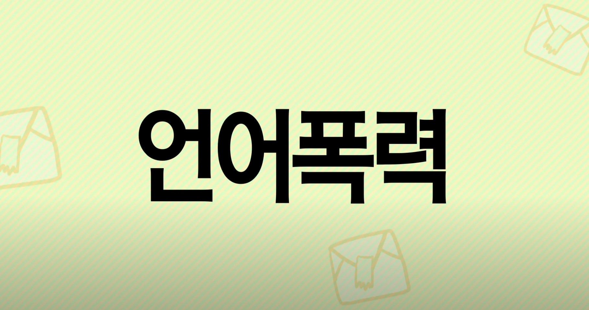

|  |  |
||
언어폭력의 의미 이해 및 생활 속 실천 방법 익히기(8분 22초) 언어폭력이 이루어지는 유형별 상황을 통해 언어폭력의 위험성 및 바른 언어 사용의 중요성 인식 |
개인정보의 개념과 중요성: 1. 개인정보? 그게 뭐예요?(3분 59초) 최근 개인정보가 유출되는 사건이 많으므로 관련 개념과 중요성을 사례를 통해 확인 |
개인정보의 개념과 중요성: 2. 개인정보가 위험해요!(5분 12초) 최근 개인정보가 유출되는 사건이 많으므로 관련 개념과 중요성을 사례를 통해 확인 |
개인정보의 개념과 중요성: 3. 개인정보를 구해줘요!(5분 36초) 최근 개인정보가 유출되는 사건이 많으므로 관련 개념과 중요성을 사례를 통해 확인 |